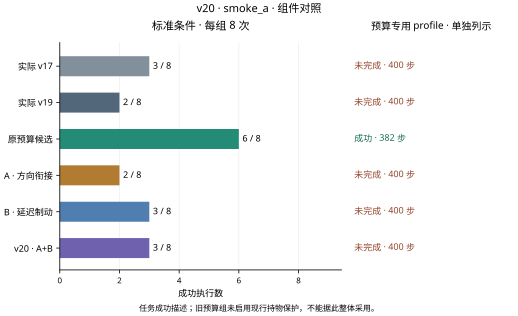
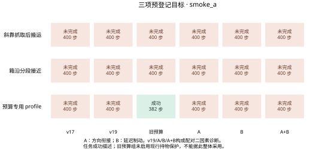

标准条件
预算专用 profile 0/1
最新完整阶段：smoke_a · 下列主数字仅统计标准条件，预算专用profile另列。
标准条件
标准条件
标准条件
标准条件
标准条件
标准条件
完整阶段累计 54 次评估执行。同一条件在不同版本和修订中重复，9个小测试条件包括8个标准条件与1个复用起点的配置profile，不能写成9个独立起点。
规划证书、保存输入回放、物理回放和完整任务成功是不同证据。旧权重冻结；本轮不做泛化训练，也不写论文。
静态证据边界：A按规划抓取轴拆分正常进展和必要横向制动；B在持物目标带中暂停或清除满足条件的积分，保留原比例项和一次速度阻尼。二者只使用当前观测与已有控制历史。D2名义外推和目标带都是控制启发式，不能替代真实未来状态、几何认证或连续5帧到位。执行前静态检查只能证实公式、输入边界和保护机制，不能证明闭环提速或成功救回。 A静态记录 · B静态记录。
已知诊断案例，不能作为独立泛化结论。预算profile复用旧6000005；v19/A/B/A+B构成两因素2×2配对诊断，完整v20为A+B。实际v17和旧预算组另作参考；旧预算组未启用现行持物保护，不能整体采用。
六组各9个已知条件的成功数依次为v17 3、v19 2、原预算7、A 2、B 3、完整v20 3。B与组合均救回12000036并保留本轮v17/v19成功案例；三个预登记目标仍全部未完成，也未满足所有历史参考零退步要求。原预算保护不同，不能直接采用。54次执行共用8个物理起点，这不是项目总体成功率或独立泛化结果。
下一步：保留B单项作为待验证候选；完整v20不采用，按执行前门槛停止564次扩展、各240次开发和独立确认。
6000005两配置在v19第328步进入CLOSE、第362步进入CARRY；A与组合则在335步因重定位超时撤回，400步仍为EDGE_APPROACH。第300步首次命令差异发生在相同状态：轴向误差80.828mm、运动−0.849mm/步，新规则未用轴向或横向阻尼；真实D2使第303步才首次出现观测差异。A前11次下降提案全部通过原混合几何保护，但recenter共23步而v19为9步。精确旧输入回放确认v19在316–320连续5帧到位，A只有316–319四帧；320步侧误差9.128mm、固定回中心距离9.604mm超出原9mm，角度、路径间隙和开度仍合格，335步recenter_age=25超过原24。此处是抓持进展回退，两配置在v19本来也失败，不能夸大成新增成功转失败。
下一步：先保留v19衔接作为对照，单独验证轴向远离时保留原反馈、重定位进入状态与D2剩余运动的关系。不得放宽9mm、5帧或24步，也不能把同一保存输入上的方向判断当作动态稳定证明。
transition_diagnosis_a.json · transition_diagnosis_a.csv · recenter_predicates_a.json
v19/A与B/组合均在277步进入CARRY、363步进入PLACE，三个搬运段仍为5/17/55步。B与组合把RELEASE事件从391提前到390，首次提交开爪392→391、经过真实D2后的首次执行394→393；截至400步实际开爪由7次变8次，并在400步获得任务成功。原PLACE释放判据未改，不能把该变化说成放宽路径5帧标准。demo87在v19/A/B/组合中均为282步成功，无步数收益。
下一步：单独保留终端放置阶段的B候选，并核对PLACE和RELEASE所需剩余预算；这只证明当前已知案例的局部收益，尚不证明任意案例多一步即可成功。
smoke_a_control_findings.json · smoke_a_control_diagnosis.json · transition_diagnosis_a.csv
B在6000005于386/387步分别提前清x/z积分，旧版为388，但391步位置误差仍回到9.476mm，最大连续到位与v19同为3帧；400步末连续帧数2→3，仍未达5且未进入PLACE。A/组合在此例没有进入CARRY，B根本没有调用，不能把组合失败归因于B。12000011第二次搬运中，B/组合的clearance段5→10步、reorient段10→13步，400步仍在transport；v19/A已于396步进入PLACE，双方虽都失败，但B并非单调改善。B单项269次、组合229次新规则提案均实际提交；与旧settling19事件重叠74/64次，不能相加计独立控制次数。
下一步：下一轮先做B仅作用于终端放置、CARRY保持父版的单项对照，防止每个路径节点都过早停止积分；同时保留12000011耗时和6000005完整搬运预算为约束，不能只优化最后几帧到位。
smoke_a_control_findings.json · smoke_a_control_diagnosis.json
13000021在各新组仍332步进入CARRY，两次有界候选搜索都未找到通过现有条件的路径。局部IK不收敛、可选候选未准入与名义时程不足均只表示此次搜索未确认，不能宣称物理不可达。13000022仍在387步进入DESCEND、388步才首次提交下降动作，没有进入搬运搜索，当前下游制动不能追回已经耗掉的接近时间。
下一步：将搬运路线的局部IK/连续姿态验证与箱沿接近耗时分别定位，使用原成功轨迹作有条件参考；保持保护与400步预算。先完成这些局部否决项，再考虑新的大规模开发对照，不做泛化训练。
transition_diagnosis_a.json · transition_diagnosis_a.csv · smoke_a_control_findings.json
预定 564 次；完整记录 0 次。
预定 720 次；完整记录 0 次。
预定 1440 次；完整记录 0 次。
小测试54次；消融564次；开发共720次，分别为v17、v19和v20各240次；独立确认1440次，须先冻结，再使用全新起点。未运行的数据不会填成结果。
| 阶段 | 成功数 / 执行数 | 门槛状态 | 原始依据 |
|---|---|---|---|
| smoke_a | 实际 v17 3/9 · 实际 v19 2/9 · 原预算候选 7/9 · A · 方向衔接 2/9 · B · 延迟制动 3/9 · v20 · A+B 3/9 | 结果门槛未通过 | 统计 · 配对CSV · 条件 · 执行源码哈希 · 动作核验 · 物理回放 |
已通过的动作核验共 20,274 控制步；物理回放 54 回合、20,274 步。回放不增加成功率样本。
8个标准条件与1个复用起点的配置分开命名；表中每项均链接本轮实际结果与逐步轨迹。
不把任意条件顺序连成趋势线，不对已知小测试附加泛化区间。每图提供600 dpi位图、矢量文件和绘图数据，来源哈希在图表目录中。


最新阶段A实际控制176次，其中横向制动90次、轴向制动0次；未触发分支只能引用对应静态或组件检查。B反馈调用1140次，新规则触发498次、实际提交498次。本轮混合几何拒绝0次、父保护替换0次；负路径测试不等于在真实闭环中触发。
上述静态与机制检查不增加评估样本。动作和物理回放链接见执行记录；页面外观、PDF字体和Git同步另由交付回执证明。
本页没有新增v20演示视频。查看v14原始对比演示 ↗，其中动作与结果仍属于历史v14实验，不能视为本轮成果。